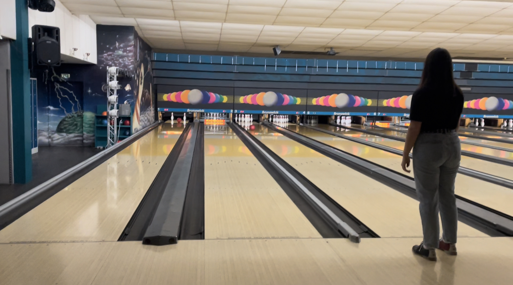

4 days in Berlin, how to keep busy ?
To start, if you don't have a departure date yet, I advise you to leave at the end of spring or
in early summer to avoid rain and fog as much as possible. Indeed, the visit of the city under these conditions
is really not favorable, Germany having a very long winter.
During my stay in Berlin, I was able to walk around the island at the museum, see the Brandenburg Gate, the Memorial to the Jews
murdered in Europe, and the Reichstag Palace. I visited the Computer Video Games Museum and the Porsche Digital
Lab. And a visit to Berlin would not be a successful visit without going through the Berlin Wall and walking around the city at the
search for street art.
If you are an art enthusiast, I advise you to go to the Berlin art market, it runs along the
Spree and you can see the Berliner Dom. There are sublime illustrations, postcards, paintings,
jewelry carved from coins. Unmissable outing for you, the Berlin Wall with its frescoes
known all over the world. If you have the opportunity to take a guided tour of Berlin with the theme of
street art, I can only recommend it to you. Even with inclement weather, this visit was for me a real
pleasure.
I left with sublime images engraved in my memory and new knowledge.
If you're more of a geek, the Computerspielemuseum is for you. It traces the evolution of
computer video games. From vintage arcades to the iconic Wii, we find all the consoles imagined and
marketed.
For the bravest and bravest, you can try the PainStation game by being over 18 and signing the
landfill which is right next to it. The concept, a complex pong. Each player stands on one side of the table and places
his hand on a plate to his left, if the player withdraws his hand it is a game over. Using his right hand on the
joystick, the player will try to win or more precisely avoid losing. If the player misses the ball, his left hand
suffers the consequences: either by an electric shock, a burn via an induction hob under his hand or he
finds himself whipped by a cable launched at high speed on the back of his hand.
To fulfill my slightly geeky side, I had the opportunity to visit the Porsche Digital Lab. I do not believe
that the visits are open to the public, but I wanted to tell you a little about it. I was able to chat with employees from
Porsche and was very rewarding. The way of working at Porsche is modern, no need for the famous suit
tie, their established ecological system is promising. They encourage their employees to carpool by giving a
bonus to those who do. The working atmosphere seems warm and the locals are friendly. After this only remains
an opinion from a person outside the company.
SIf you like to walk, I advise you to go to the Brandenburg Gate. Unmissable monument, you
can't pass Berlin without taking a look. Accessible by public transport, you have no excuse not to
not go there. A stone's throw away you will find the Memorial to the Murdered Jews of Europe and the Reichstag Palace. Same
in the rain, the monuments are sublime, I can't even imagine if I had seen them with a big blue sky.
To conclude, the last evening before leaving, I was able to go bowling. The experience was very
nice even if it remains an activity that can be done in France. If one evening, you don't know what to do, try
the activity and shows the French talent in bowling to these Berliners.
